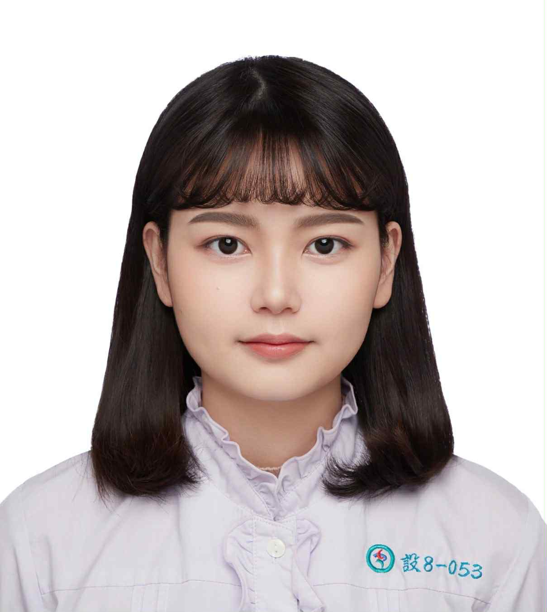

基本資料
- 姓名：王芷璇
- 年齡：21 歲
- Email：112051072@live.asia.edu.tw
學歷
- 亞洲大學 數位媒體設計學系（2022 - 至今）
技能
- 數位設計：Photoshop、Illustrator、Figma
- 3D建模：Blender、Maya
- 程式基礎：HTML、CSS、JavaScript
- 語言能力：中文（母語）、英文（良好）
自我介紹
我目前就讀數位媒體相關科系，主修 3D 建模與遊戲製作。 我平時主要使用 Blender 與 Unity 進行角色與場景建模，熟悉貼圖烘焙、UV 展開與材質節點設計，特別喜歡架空的超現實主題，有種突破次元的驚喜感。 在團隊與工作中，我通常負責美術整合協助模型在不同環境中呈現一致效果。遇到問題時也樂於主動協助他人解決，這份特質讓我能在團隊中發揮穩定的支撐作用。 此外，我很重視細節與品質，會反覆測試顏色與光線，直到整體氛圍達到理想狀態。 我希望能透過這次實習，學習業界更完整的製作流程，並將學到的技術應用在更有挑戰性的專案中，讓作品不只是好看，還能真正服務於遊戲世界。